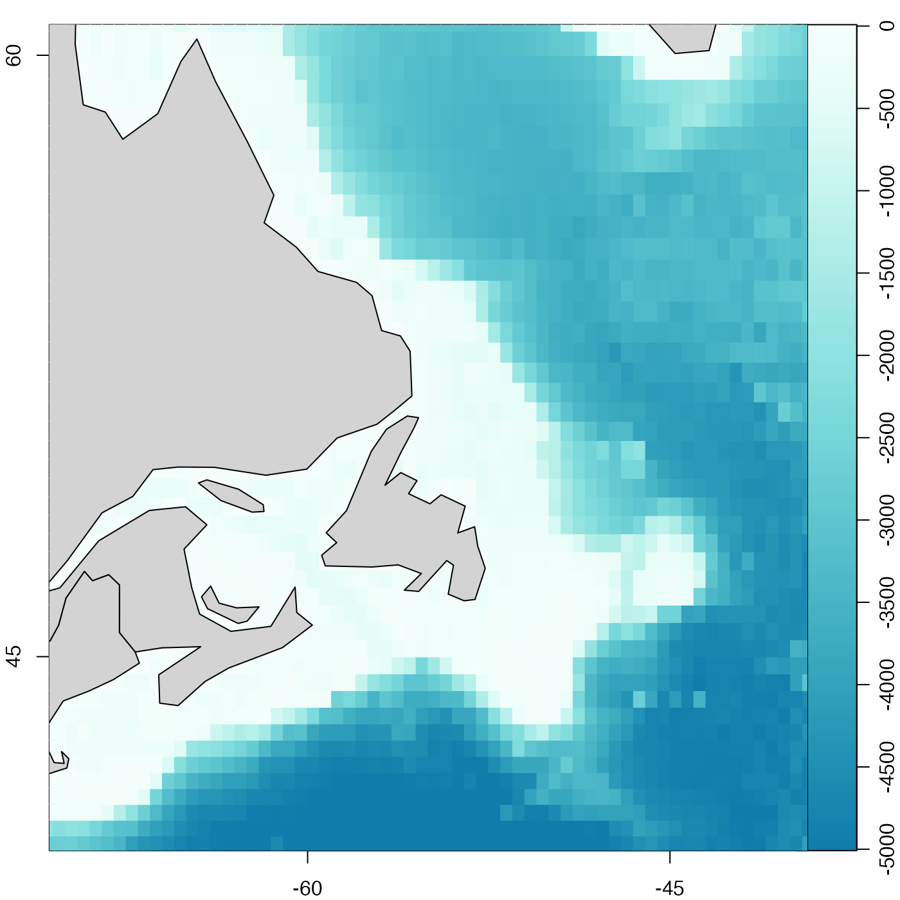

mapPolygon adds a polygon to an existing map.
Usage
mapPolygon(
longitude,
latitude,
density = NULL,
angle = 45,
border = NULL,
col = NA,
lty = par("lty"),
...,
fillOddEven = FALSE
)Arguments
- longitude
numeric vector of longitudes of points defining the polygon, to be plotted, or an object from which both longitude and latitude can be inferred (e.g. a coastline file, or the return value from
mapLocator()), in which case thelatitudeargument are ignored.- latitude
numeric vector of latitudes of points to be plotted (ignored if both longitude and latitude can be determined from the first argument).
- density, angle, border, col, lty, ..., fillOddEven
handled as
polygon()handles the same arguments.
See also
A map must first have been created with mapPlot().
Other functions related to maps:
formatPosition(),
lonlat2map(),
lonlat2utm(),
map2lonlat(),
mapArrows(),
mapAxis(),
mapContour(),
mapCoordinateSystem(),
mapDirectionField(),
mapGrid(),
mapImage(),
mapLines(),
mapLocator(),
mapLongitudeLatitudeXY(),
mapPlot(),
mapPoints(),
mapScalebar(),
mapText(),
mapTissot(),
oceCRS(),
oceProject(),
shiftLongitude(),
usrLonLat(),
utm2lonlat()
Examples
# \donttest{
library(oce)
data(coastlineWorld)
data(topoWorld)
# Bathymetry near southeastern Canada
par(mfrow = c(1, 1), mar = c(2, 2, 1, 1))
cm <- colormap(zlim = c(-5000, 0), col = oceColorsGebco)
drawPalette(colormap = cm)
lonlim <- c(-60, -50)
latlim <- c(40, 60)
mapPlot(coastlineWorld,
longitudelim = lonlim,
latitudelim = latlim, projection = "+proj=merc", grid = FALSE
)
mapImage(topoWorld, colormap = cm)
mapPolygon(coastlineWorld[["longitude"]], coastlineWorld[["latitude"]], col = "lightgray")

# }